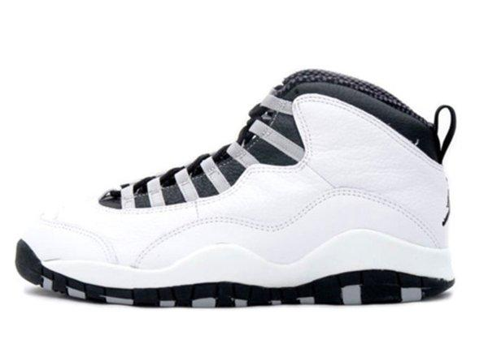

História do Air Jordan 10:
O Air Jordan 10 foi lançado em 1995, durante o período em que Michael Jordan se preparava para retornar ao basquete após sua primeira aposentadoria. Criado por Tinker Hatfield e finalizado por Michael Strasser, o modelo celebra o legado de MJ até aquele ponto.
Seu grande destaque está na sola, que traz uma lista com 10 conquistas da carreira de Jordan até então — como títulos, recordes e prêmios individuais. O design é mais minimalista e limpo, mas ainda assim funcional, com cabedal em couro e sistema de amarração eficiente.
Quando Jordan finalmente retornou às quadras em março de 1995, ele usou o AJ10 com o número 45 (em vez do tradicional 23), pois era o número que ele escolheu ao voltar do beisebol.
O AJ10 teve várias colorways regionais, lançadas em cidades como Chicago, Nova York e Seattle, cada uma homenageando um time adversário marcante.